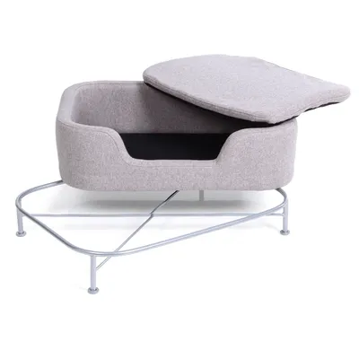
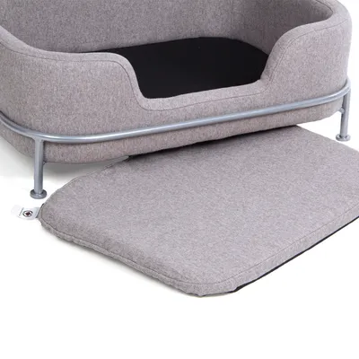

Elegant kattbädd
Om produkten
Högkvalitativ djurbädd för katter, med sammetslen, mjuk dyna, stilren stålram, tvättbart överdrag, fylld med mjukt skumgummi, med höga kanter och lågt insteg.
Det tvättbara överdraget, vadderat med mjukt skumgummi, gör sängen särskilt lätt att rengöra och även bekväm. De högkvalitativa materialen och det noggranna utförandet är ett tydligt uttryck för tillverkningskvaliteten hos Kattbutiken.
Den här sängen är inte bara en bekväm tillflyktsort för ditt husdjur, utan också en riktigt snygg möbel i ditt hem.
Pris
1499 kr
Produktinformation
- Färg: Grå
- Material: Polyester, stål
- Totala mått: L 68 x B 47,5 x H 25,5 cm
- Skötselråd: Avtagbart och handtvättbart överdrag